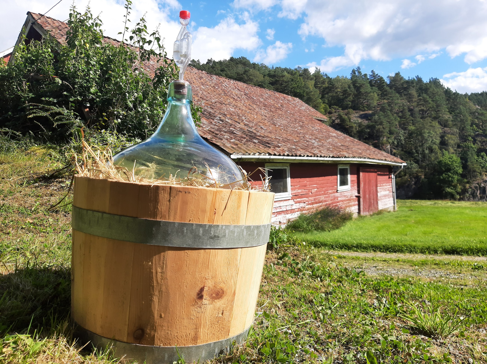

Bloggen

Vin ballong, perfekt for mjød fermentering
Vinballonger er perfekt for å brygge i. I denne skal det brygges mjød. Den er utstyrt med en vannlås slik den slipper ut lufttrykket og unngår å sprenge.

Funnet rusavhengig sitt gjemmested
I nærheten av denne mystiske kokestasjonen ble det funnet gjenglemt tjuvgods. Tjuvgodset besto i hovedsak av turn pokaler av sølv.

Hulemaleri?
Her er noen fine tegninger som mest sansynlig er tegnet av den skyldige av tyveriet av sølvpokalene til turn laget.